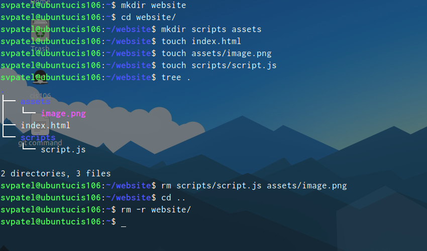
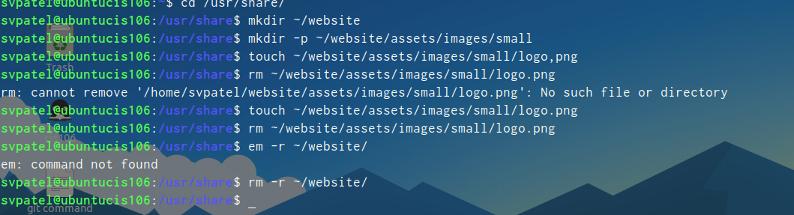
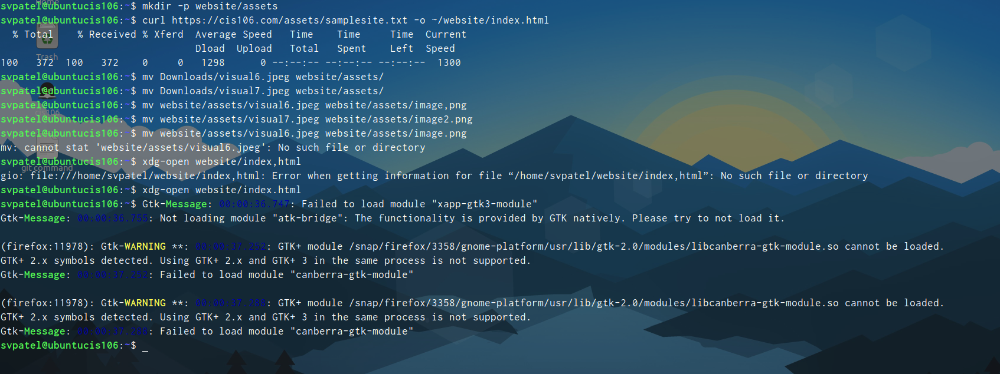
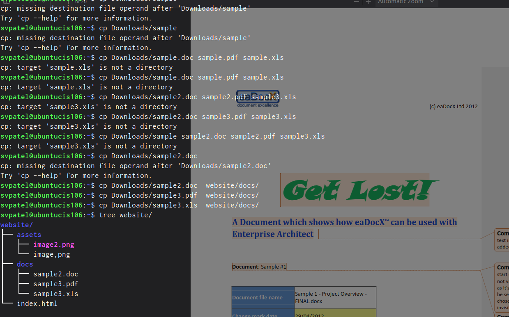

name: sahil v patel
course: cis 106
semester: spring 23
What are Command Options?
Command options are extra settings or modifications you can add to a command to change its behavior. They usually start with a hyphen (-) and are used to customize how a command operates. For example, in the command ls -l, the -l is an option that tells the ls command to display detailed information about files.
What are Command Arguments?
Command arguments are the inputs you provide to a command to specify what it should operate on or how it should perform a task. For instance, in the command cp file1.txt folder/, file1.txt and folder/ are arguments. They tell the cp command which file to copy and where to copy it.
Which command is used for creating directories? Provide at least 3 examples.
The mkdir command is used for creating directories. Here are three examples:
mkdir datamkdir cis116 cis202 cis212mkdir -p projects/documentsWhat does the touch command do? Provide at least 3 examples.
The touch command is used to create empty files or update the access and modification timestamps of existing files. Here are three examples:
touch notes.txttouch file1.txttouch file1 file2 file3How do you remove a file? Provide an example.
The rm command is used to remove files. For example, to remove a file named "example.txt," you would use:
rm example.txt
How do you remove a directory, and can you remove non-empty directories in Linux? Provide an example.
To remove an empty directory, you can use the rmdir command. To remove a non-empty directory, you use the rm command with the -r option. For example:
cis116cis202Explain the mv and cp command. Provide at least 2 examples of each.
The mv command is used to move or rename files and directories. Examples:
mv data.txt documents/mv data newdataThe cp command is used to copy files and directories. Examples:
cp image.jpg /picturescp -r root/ newlocation/


